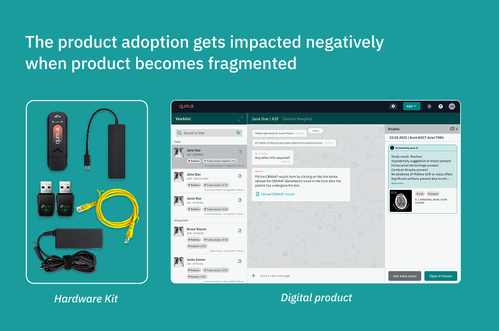
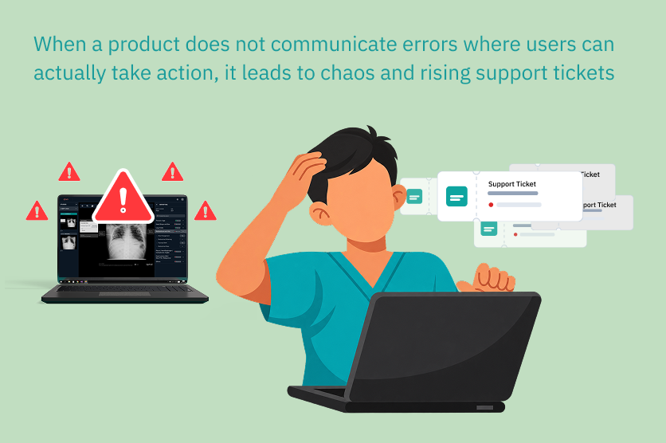

Hi, I am Harshita Bhargava
PROJECTS

Redesigning the Screening Camp Deployment and Setup Experience
A crucial entry point feature was being skipped by the users because they found hardware setup too complicated to follow. I solved it by redesigning the experience to bring hardware and app together as one cohesive product and not two separate things.

Designing support experience for onprem systems with no reliable internet
Nearly half of all support tickets were basic issues users could've resolved themselves, but manuals and chatbots weren't fixing it. I traced it back to a product that did not communicate when something went wrong, and redesigned the workflow to guide users through problems as they happened instead.
WRITINGS